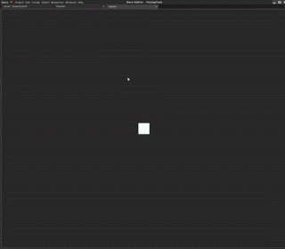

Object Creation
This lesson covers creating archetypes and using those archetypes to create objects at run-time.
Learning Objectives
- Create archetypes.
- Spawning instances of archetypes at runtime.
| Vocabulary | ||
|---|---|---|
| Archetype | Spawn | Instance of an Archetype |
Create a New Project
Creating Objects with Code
Let’s make a ball projectile Archetype.
- Command :
CreateSpriteor - In the Properties Window
- Set Name to:
Ball - Under Transform
- Set Scale to:
[0.2, 0.2, 0.2]
- Set Scale to:
- Under Sprite
- Set Color to:
[R: 255, G: 0, B: 0, A: 1.00],#FF0000 - Set SpriteSource to:
Circle
- Set Color to:
- Add Component RigidBody
- Add Component SphereCollider
- Under SphereCollider
- Set Radius to:
0.5
- Set Radius to:
- Set Name to:
Upload to the Archetype Ball
Set Archetype to:
BallUpload the archetype
Now that it is uploaded, you can delete your object
Now let’s add the ButtonSpawner script
- Add a new ZilchScript resource named:
ButtonSpawner- Change the ButtonSpawner script to this code:
class ButtonSpawner : ZilchComponent
{
function Initialize(init : CogInitializer)
{
Zero.Connect(Zero.Keyboard, Events.KeyDown, this.OnKeyDown);
}
function OnKeyDown(event : KeyboardEvent)
{
// When space key is pressed
if(event.Key == Keys.Space)
{
// Spawn at this object's current position
var spawnPosition = this.Owner.Transform.Translation;
// Find the Ball archetype:
var archetypeToSpawn = Archetype.Ball;
// Pass the archetype and position to the Space to make our object
this.Space.CreateAtPosition(archetypeToSpawn, spawnPosition);
}
}
}
ButtonSpawner object
- Command :
CreateSpriteor- Under Properties
- Add Component ButtonSpawner

- Set Name to:
Spawner
- Save your project and run your game
- Now press the
Spacebar

Modifying Created Objects
After you have created the object, you can access its components and modify their properties Replace your ButtonSpawner script’s OnKeyDown function with the following code to set the velocity so the ball will fire out.
function OnKeyDown(event : KeyboardEvent)
{
// When space key is pressed
if(event.Key == Keys.Space)
{
var spawnPosition = this.Owner.Transform.Translation;
// Find the Ball archetype:
var archetypeToSpawn = Archetype.Ball;
// Pass the archetype and position to the Space to make our object
var createdBall = this.Space.CreateAtPosition(archetypeToSpawn, spawnPosition);
createdBall.RigidBody.Velocity = Real3(0,10,0);
}
}
You should now see the balls travelling up instead of down when they spawn.
Timed Spawning
Let’s do a more complete example by making a TimedSpawner class.
- Add a new ZilchScript resource named:
TimedSpawner- Change the TimedSpawner script to this code:
class TimedSpawner : ZilchComponent
{
[Property]
var WhatToSpawn : Archetype;
function Initialize(init : CogInitializer)
{
// Connect to LogicUpdate event:
Zero.Connect(this.Space, Events.LogicUpdate, this.OnLogicUpdate);
}
function OnLogicUpdate(event : UpdateEvent)
{
var spawnPosition = this.Owner.Transform.Translation;
this.Space.CreateAtPosition(this.WhatToSpawn, spawnPosition);
}
}
- Select the Spawner object
- Under Properties
- Remove the ButtonSpawner component
- Add the TimedSpawner component
- Under TimedSpawner component
- Set WhatToSpawn to:
Ball
- Set WhatToSpawn to:

We have connected the OnLogicUpdate function to the LogicUpdate event so that it will be called every time game logic is updated. In the OnLogicUpdate method, we are creating an instance of the Ball. That will create a lot of balls very quickly. Instead, we want to create a ball only after a fixed period of time has passed.
Change the TimedSpawner code to look like this:
class TimedSpawner : ZilchComponent
{
[Property]
var WhatToSpawn : Archetype;
[Property]
var SpawnTime : Real = 1.0;
var TimeSinceLastSpawn : Real = 0.0;
function Initialize(init : CogInitializer)
{
// Connect to LogicUpdate event:
Zero.Connect(this.Space, Events.LogicUpdate, this.OnLogicUpdate);
}
function OnLogicUpdate(event : UpdateEvent)
{
// Add the amount of time that has just passed (Delta Time)
// to the time since last spawn
this.TimeSinceLastSpawn += event.Dt;
// If enough time has passed, spawn the ball
if (this.TimeSinceLastSpawn > this.SpawnTime)
{
var spawnPosition = this.Owner.Transform.Translation;
this.Space.CreateAtPosition(this.WhatToSpawn, spawnPosition);
// Need to reset the value
this.TimeSinceLastSpawn = 0.0;
}
}
}

On Your Own
Try:
- changing SpawnTime
- creating new archetypes to spawn
- adding properties to the spawning component, for example:
- number to spawn
- direction to fire